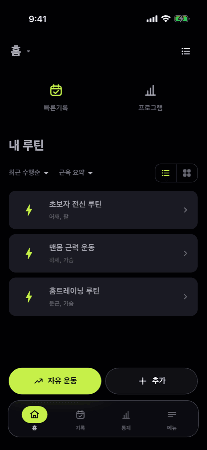
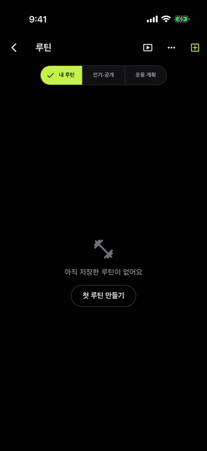
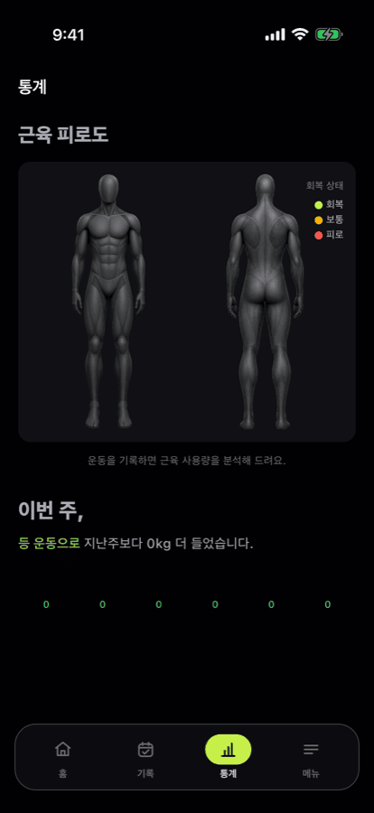
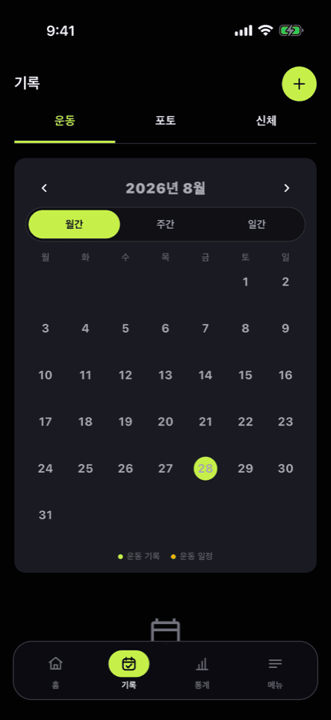

두 번의 탭으로 남깁니다
세트, 무게, 횟수를 빠르게 기록합니다. 직전 기록 불러오기와 모든 세트 한 번에 완료로 반복 입력을 줄였습니다. 진행 중이던 운동은 앱을 닫아도 그대로 이어집니다.




세트, 무게, 횟수를 빠르게 기록합니다. 직전 기록 불러오기와 모든 세트 한 번에 완료로 반복 입력을 줄였습니다. 진행 중이던 운동은 앱을 닫아도 그대로 이어집니다.
모든 운동에 시작 자세, 수행 순서, 호흡, 주의사항이 있습니다. 부위와 장비로 걸러 찾고, 핵심 큐는 강조로 바로 눈에 들어옵니다.
어느 부위를 얼마나 썼는지 인체 그림 위에 피로도로 표시합니다. 주간 볼륨, 근육 밸런스, 근력 추세를 함께 봅니다.
월·주·일 보기로 기록을 훑고, 사진과 신체 기록까지 한자리에서 관리합니다. 지난 운동을 그대로 불러와 다시 시작할 수 있습니다.
Science
12회 이하의 완료 세트에서 Epley · Brzycki · Lombardi 추정식의 중앙값으로 1RM을 계산합니다. RIR을 남기면 남은 반복 수까지 반영해 정확도가 올라갑니다.
Features
옆으로 밀어 보세요 →
최근 기록과 RIR, 운동별 최소 증량 단위를 반영해 다음 세트와 다음 운동의 무게를 제시합니다.
추정 1RM 향상이 멈추면 알려 줍니다. 근력 추세와 함께 무엇을 바꿔야 할지 보여 줍니다.
목표 중량에 맞춰 바벨 양쪽에 무엇을 끼워야 하는지 계산합니다.
세트를 완료하면 자동으로 시작합니다. 앱을 닫아도 종료 시점에 알려 줍니다.
반복 일정을 등록하고 시작 전에 알림을 받습니다. 루틴을 날짜에 붙여 계획합니다.
러닝, 사이클, 로잉을 시간·거리·칼로리로 기록하고 근력과 한 세션에 담습니다.
Pricing
루틴도 커스텀 운동도 기록도 개수 제한이 없습니다. PRO는 개수를 풀어 주는 대신 계산을 더 깊게 합니다.
무료에서 벽에 부딪히는 일은 없습니다.
다음에 얼마를 들지 계산해 줍니다.
Languages
화면 문구부터 운동 부위와 장비 이름, 날짜와 단위 표기까지 언어를 따라갑니다.